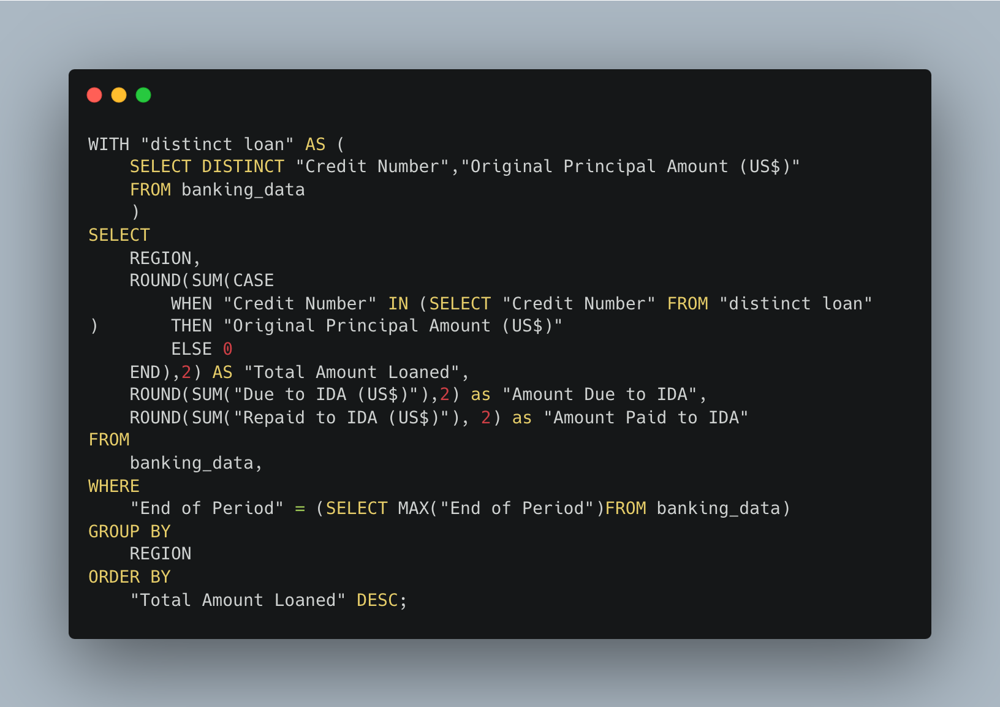
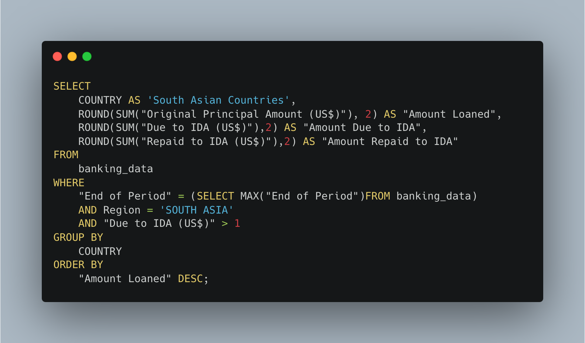
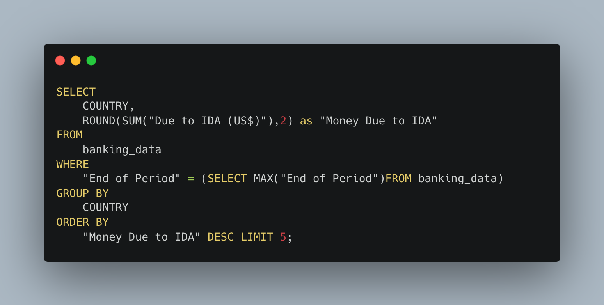
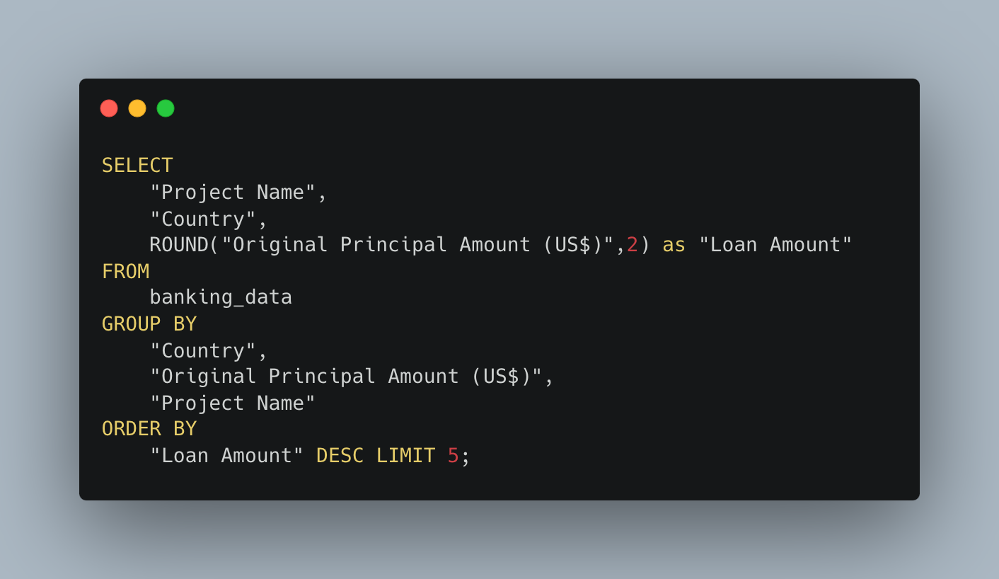
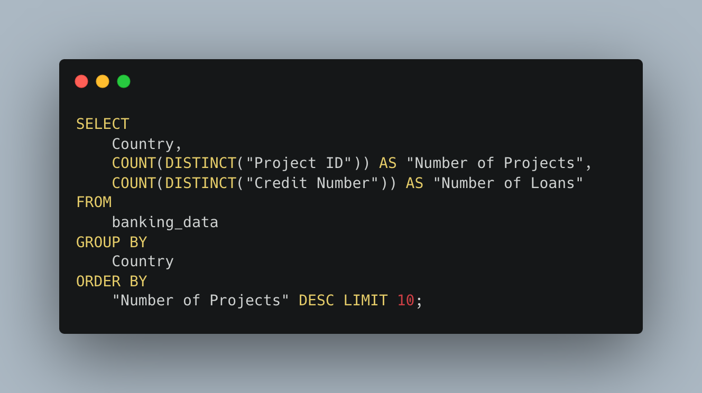

Global Trends: Analyzing IDA Credits and Grants Statements
Established in 1960, the International Development Association (IDA) is a division of the world bank that provides loans and grants for programs that boost economic growth, reduce inequalities, and improve living conditions. The organization plays a crucial role in achieving global development goals by targeting the poorest and most vulnerable populations.
In this article I investigate regional patterns seen in IDA funding as well as some general funding trends based on the latest dataset provided by the World Bank. The dataset offers a comprehensive overview of IDA's Statement of Credit and Grants as of July 15, 2024; featuring statements on a total of 10504 loans associated with 7530 projects from 137 recipient countries. The IDA is critical to development initiatives, particularly within poorer nations, and it is thus crucial to conduct an analysis of data related to IDA funding when attempting to comprehend global development trends. This analysis was conducted using MySQL and Tableau.
Key Takeaways
- As of July 15 2024, The IDA has 10504 registered loans which have resulted in the
provision of $555,165,352,029.20.
- The total amount due to the IDA on current loans is $199,092,170,590.72 with South Asian Nations
representing 31% of this total.
- The total amount paid on current loans is $139,197,225,800.59.
- The average Service Charge Rate for a loan is a mere 0.8% highlighting the IDA's commitment
to growth.
- The average loan issued by the IDA has a value of $44,744,005.31.
- Eastern and Southern Africa received the most funding $172,935,391,698. This is in line with IDA's
focus on development in poorer nations.
- South Asian Nations owe the IDA the most money $62,046,692,620.
- India has the most loans 441 and projects 407 and has paid 61% of it's debt off.
- Bangladesh owes the most $19,887,305,315, and has only paid off around 25% of it's debt.
Queries and Visualization
Queries to obtain general information:
Visuals | Queries for obtaining information relevant to graph:




